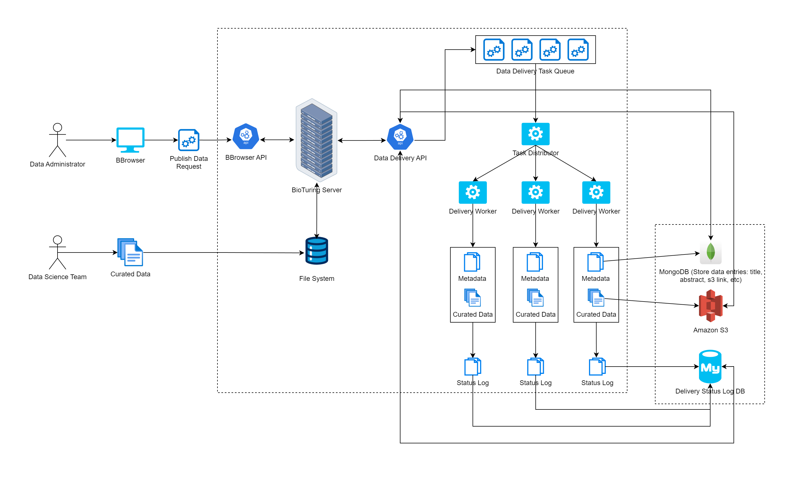

The BioTuring Data Delivery Pipeline is an automated ETL and publishing framework engineered to streamline how internal data science teams catalog and release curated biological datasets. Managed directly via an administrator control interface, this data pipeline handles high-volume publish operations by converting manual delivery steps into robust, decoupled automated sequences.
When an administrator initiates a data release request, the metadata and binaries are processed through a centralized task queue. A managed task coordinator orchestrates distribution out to isolated data workers. Each operational worker processes the complex data packages safely, writing core large-scale single-cell asset streams to Amazon S3 cloud object storage, registering indexed records in MongoDB, and generating persistence audit tracks inside a relational MySQL instance.
Architected the core end-to-end data processing flow and structured API backend services from scratch. Developed secure, resilient programmatic ingestion endpoints to capture multi-attribute dataset attributes (titles, study abstracts, experimental sequencing technologies) cleanly and safely.
Implemented multi-tier transaction mappings across disparate database technologies. Engineered worker nodes to simultaneously pipe massive compressed binary biological payload configurations to Amazon S3 cloud buckets while documenting non-relational document indexing properties inside MongoDB.
Built a clean, highly reliable web application dashboard panel specifically for the internal data engineering team. This unified management console gives administrators real-time tracking transparency into pending releases, system execution state, and data worker availability.
Integrated structured logging architectures using MySQL databases to maintain strict operational integrity across public releases. Programmed smart retry logic and state machine isolation parameters to elegantly handle network disruptions and unblock stuck queues without experiencing data corruption.